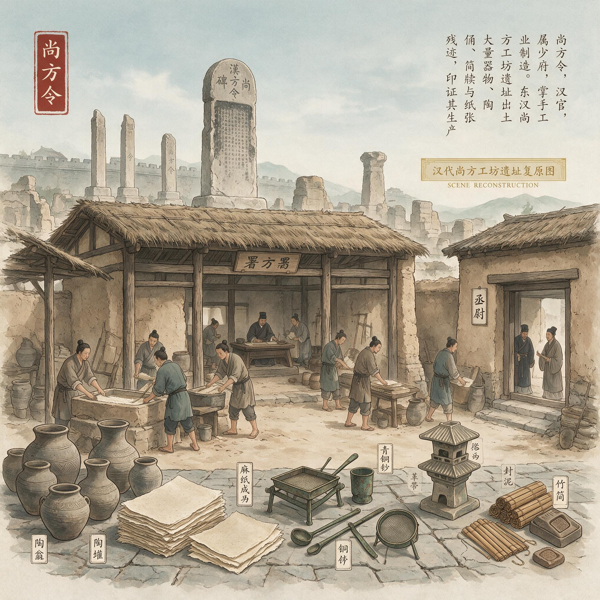

第 4 章
尚方令的工坊
尚方令的官服是青色的，袖口收得很窄。蔡伦第一次穿上它的时候，两只手从袖中伸出来，指节上还有几道旧疤，那是少年时在铁官铺里被炉渣烫过留下的痕迹。他低头看了看那几道疤，又把手翻过来，掌心朝上。阳光从尚方工坊的东窗斜切进来，落在掌纹里，掌纹很深，像耒阳城外被雨水冲出的沟。
没有人教过他怎样做一个尚方令。少府的任命文书送到他手上的时候，他只在那片竹简上看见自己的名字，敬仲，两个字，用墨写得很端正，下面盖着少府的印，朱色已经有些漫漶。他那时站在宫中的一间偏殿外，风从北面吹来，把竹简吹得微微发凉。他忽然想，这一片竹简用了多少片竹子，剖开以后要经过多少道刀削，才能削到这样薄，这样平。这个念头一闪而过，快得像他当年在铁炉边看见的一道火星。
尚方工坊在洛阳城北宫之西，夹在两道高墙之间，从外面看并不起眼。门是寻常的木门，外面用铁条加固，铁条上生了暗红的锈。推门进去，先是一阵热风扑面而来，带着炭火、铜液、生漆和湿麻混合的气味。
那气味极有分量，压得人鼻息一滞。然后才是声音，许多种声音从不同的作间里传出来，铁锤敲在铜料上的闷响，纺轮转动的吱呀，刻刀刮过竹片的沙沙，还有水从高处浇进石槽的哗啦。它们并不整齐，甚至有些互相干扰，但合在一起，却像一种陌生的呼吸。
工坊内部被隔成许多间。最外面是铜作，墙边码着成捆的铜料，有的已经熔过，表面泛着灰黑色的氧化层；地上散着碎铜屑，踩上去细细地响。再往里走，便是铁作，炉火正旺，两个工匠赤着上身，一人用长钳夹住一块烧红的铁料，另一人抡起大锤，一下一下地砸。铁料冒出的火星溅到湿泥地上，发出极短的嘶声，像许多细小的蛇。
蔡伦在铁作外站着看了一会儿。他看的是那个抡锤的人。那人前腿微弓，后腿蹬直，抡锤时脚步不动，腰先沉下去，然后整条脊背带着肩膀、胳膊和铁锤一起甩起来，砸下的一瞬手腕才猛力一压。蔡伦认得这个动作。他父亲当年在铁官铺里也是这么教他的，先沉腰，再送肩，最后才压腕。
锤落在料上的声音也和耒阳一样，先是一声钝响，然后是一串余音，像铁自身在发抖。他想进去。他想接过那把锤子，像少年时那样站在炉边，把一块烧得发白的铁料敲出他想要的形状。但他没有动。
尚方令不进铁作。尚方令查看各作，只看，不问。问得多了，工匠会慌；问得少了，工坊会松。他慢慢发现，这个位置需要一种恰到好处的身体语言，脚不能停太久，手不能拿起来指点，眼神要稳，不能在某一个工匠身上停留过长，也不能扫得太快，快到让所有人觉得你在敷衍。你自己不笑，也不让旁人笑。你从一间作房走进另一间作房，让每一处都有人知道，尚方令今日看过这里。至于你懂不懂，没有人知道，也没有人想知道。
但蔡伦懂。这正是他与先前历任尚方令最不同的地方。他懂那些声音。铜料过火时颜色会变，由暗红到橙红，再到近于白的黄，他知道该在哪个颜色下把料抽出来。他也知道淬火的水里加了什么，那水的气味发涩，他闻得出。
历任尚方令大多来自宫中其他职位，有的管过文书，有的在少府下属别署坐过，没有人真正在炉边站过。蔡伦站过。他站过的那个炉子比这里的小，风箱也不如宫里的好，可炉火是一样的，铁也一样，人抡锤时肌肉的绷紧也一样。所以尚方工坊对他来说，不只是这个官职的位置。那扇生锈的铁门一推开，他听见的是一整个少年时代从记忆深处翻涌上来的回声。
尚方令这个官，说起来并不算大。东汉少府下属二十余官署，尚方只是其中之一。尚方令秩六百石，比县令略高，放在整个洛阳的官僚序列里，几乎排不上号。可它掌握的，却是一块极特殊的领地。皇家御用器物，兵器、礼器、乘舆、服饰、随葬明器，乃至皇帝案头的一方砚、一枚印、一盏灯，凡标着“尚方”二字的，便不许民间仿造，也不许工坊外的人过问。这个位置，是因“皇”而重，不是因“官”而重。
蔡伦上任以后慢慢明白，尚方令真正握在手里的，并不是某一件器物的制作权，而是三条看不见的线：一条是原料，一条是工匠，还有一条，是试。《后汉书·宦者列传》称他“有才学，尽心敦慎”，这八个字不是虚言。他监督宫廷物品的制作，人们认为就是从这个时候，他开始接触东汉最好的手工工艺，并改进当时的造纸技术。
这不是他的领悟，是他在工坊里走了几个月，一级一级看出来的。为什么是原料？因为尚方库房里的东西，多得让外人难以想象。各地贡赋送入少府以后，凡属御用器物的原料，先由尚方挑选。树皮、麻、藤、竹、生漆、兽角、象牙、金银细丝、朱砂、石青、铁骨、铜母，一种一种码在木架上，库吏手里有簿，簿上记着年月、产地、数量、损耗。蔡伦有时会在库里站上很久。他最初只看那些金属料，把铜母托起来，用指节敲一敲，听声音的松紧。
后来他开始看植物纤维。库里有成捆的麻，从巴蜀运来，束得整整齐齐，麻皮脱得干净，纤维又长又匀；有剥下的藤皮，卷成团，颜色发青；有竹片，剖得极薄，一层一层叠起来，像压紧的羽毛。他蹲下来，抽出一片竹，横过来看它的断面。竹子的断面上有一层极细的丝，像人的毛细血管。他曾在耒阳见过这种丝。铁官铺边有一条河，河边长满竹，少年时的他没事就用刀剖竹，看那些丝在阳光下发亮。他那时不知道那叫什么，后来才知道，那是纤维。除了竹子，还有构树皮。
构树皮是南方贡上来的，剥开以后，外面是粗糙的褐皮，里面却是一层白色，摸上去很滑。库吏说，这是作革的料，晾干以后可以捶得极薄。他问作什么革，库吏摇头，只说以前用过。蔡伦没有追。他把构树皮放回去，手上留了一层极细的灰。
真正让他停下来想的是鱼网。那些鱼网是各地送到少府来的废旧之物，本不在库房的正册上，只堆在一个偏角里。它们破得不成样子，网眼大大小小，表面结着青苔和干泥，有的地方还挂着发白的鳞片。蔡伦蹲在那一堆破网前，看了许久。
那些网原来是麻织的。麻到了海里，到了河里，被水浸，被日晒，被鱼的身体摩擦，渐渐散成一股一股，又细又软，却仍然绞在一起。他扯下一段，用手掌揉了揉。干硬的表面一搓就碎，可内里的纤维还在，比生麻更柔，更轻。他翻来覆去地看，忽然冒出一个念头，这些破网如果重新捶过、洗过、铺开，会变成什么。这个念头没有继续下去，因为他站起身的时候，库吏正从门外进来，手里捧着一摞新簿。
库里幽暗，飞尘在从门缝漏进来的光柱中浮着，蔡伦拍了拍膝上的灰，转身走了。那个念头却像一根细麻一样勾在他脑子里，不紧，但一直在。
让他真正想得深下去的，是一个他从没想过会进库的东西。那天是他第一次以尚方令的身份去清点一批新入库的贡赋。库吏照例打开木箱，一件一件报给他听。报到最后，一个小木盒里盛着几团东西，颜色发乌，软塌塌地团在一起，像丝，又比丝粗，中间裹着一些碎屑。蔡伦用手指碰了碰，问这是什么。库吏说，是缣帛太学写经用旧了，剥下来的废絮。蔡伦“哦”了一声，没有多问。
库吏合上木盒，顺手把那几团废絮拨到一边。蔡伦却站在原地看着那个木盒被拿走。那些废絮太滑了，滑到他觉得里面有另一层可能。他想起，书简用竹，缣帛太贵，那些废絮如果还能重新铺一遍，会不会比竹轻，比帛贱。他迅速又走到那堆破鱼网旁边，弯下腰，又扯下一段麻。这一回他把它握在拳心里，用力一攥。麻的纤维从指缝里钻出来，像鬓发。
他突然明白了，尚方令这个位置真正给到他的，不是一间工坊，不是一块令牌，而是一整个民间工匠永远无法进入的房间。他站在这个房间里，什么都可以看，什么都可以试，没有人会说成本太高，没有人会说材料不够。尚方库里，这成捆的麻、腐朽的鱼网、废弃的丝绵，每一样背后都站着一整条贡赋的路。那条路从州郡到朝廷，从农户到少府，那些材料，恰恰是这个帝国最少数人能够触碰到的纤维世界。
后世研究认为，蔡伦改良造纸技法的创新源流，受有南岛语族树皮布文化的影响。他将古代造丝纸——汉族本身传统——和造树皮布纸——南岛外来文化——的两种工艺整合起来，以造丝纸工艺的制纸工法，结合造树皮布纸工艺的材料学知识，从动物性材料（蚕丝）改为转用植物纤维（渔网、木料）来造纸。这正是尚方工坊作为技术杂交温床的意义所在：不同门类的技艺——冶铸、纺织、漆器、制陶——在同一空间内交叉渗透。
可他又极清醒。库房里有材料，有工具，有工匠，这并不等于尚方令可以想做什么就做什么。
尚方令要做，必须有一个由头。那个由头必须来自皇家。皇帝的器物如果不出问题，你就是把尚方工坊翻过来，也只是替少府省一袋铜、一件帛。库里那些纤维，是预备给上用的。纸张不是上用的。
纸张，至少在这个年月，还不算一件需要费心的东西。蔡伦清楚，他能以尚方令的身份蹲在库房偏角看那一堆破鱼网，却不能在没有任何名义的条件下，让人把鱼网送到捣浆槽去。尚方令的第一步，只能是在他本职该做的事上站稳。
他要监造兵器、礼器、乘舆，要把每一年的考工簿记清楚，要让少府卿挑不出错。在这些事上，他只能比别人做得更细。
新官到任，最难过的一关不是事，是人。尚方工坊里的工匠从各地征调而来，大多在工坊里做了十年以上。工坊里，资历比官职更沉。一个工匠可以低着头听完尚方令的吩咐，转回作房照老法子做，不争辩，也不顺从，只把活做得不死不活。
蔡伦明白，他若想真正掌控这间工坊，光靠一纸任命远远不够。他要让人看见他懂行。他必须先在本职的器物上，让工匠们服气。这是他用耒阳教会他的东西，人只有在你抓得住他手上那把锤的时候，才会把腰弯得低一点。
机会，他是慢慢寻的。工坊里最难的活是铸剑。尚方有“尚方剑”之号，是皇家兵器里的头一等。铸剑用的铁要经过数十次锻打，把铁中杂质打出来，再反复折叠、延展。剑身不能太硬，硬了发脆，战场上容易断，也不能太软，软了入甲即卷。这一条火候线，只有经年老匠才压得住。蔡伦到任后，连续三旬去看剑作。他不干涉，只是站在门外看。
到了第四旬，有一天，主铸工匠把一柄剑从淬水里提出来，剑身已经发蓝。蔡伦忽然开口：“弯一点。”那工匠一愣：“令君，剑弯不得，剑弯了便是废器。”蔡伦说：“我是说，这剑的料太刚，淬后剑身会有脆纹。你试试，把剑身回火一次。”主铸工匠脸色变了一变，回火是熟铁的活，不是尚方剑的工序。蔡伦不动，只说：“回火。”主铸工没有动，只把剑往木台上一搁，说：“尚方剑没有回火的规矩。”
蔡伦没回话。他走上前，把剑拿起来，横在眼前看。剑身平直，光下泛青蓝。他又把剑翻过来，剑根处有一道极细的暗纹，若不细看像是一点油污。他用拇指抹过去，那纹还在。他抬起头看着主铸工匠：“这剑不用回火，三个月后会从根断。”
那工匠脸色由疑惑慢慢变成不安。他重新拿过剑，凑近细看，又用手指弹了弹剑身，回音轻而短。他忽然不说话了。蔡伦压低声音：“重新打。”三天后，那柄剑按他的法子重新淬炼。老匠人没有说一个谢字。但下一次蔡伦再到铁作门口时，那个主铸工匠先躬了躬身。
这个躬，比他初任时受的任何一个礼都要真。就是这一躬之后，蔡伦才真正能进入尚方工坊的内部。
他开始有了另一个视角。这个位置的控制力，不止于让人听话，而在于他可以在“不违规”的前提下，把不同作房之间的技艺撬开口子。工坊里各作有各作的师父，手艺只在师徒之间传，不同作房之间从不通气。
这一点，蔡伦在初任时就发现了。铁作的工匠不知道漆作怎么调漆灰；织作的女工没见过剑匠锻打的火色；陶作的人从不进铜作，铜作的人也从不看陶作的窑。一道一墙，把各种绝活隔得死死的。蔡伦不打破这些墙，也不可能打破。
他做的是调度。他把一个擅长铜镜细磨的匠人调去协助礼器刻纹；他在织作和藤作之间作了安排，让藤皮的浸泡由织作的人去看。起初工匠们不言语，只是低头做事。直到有一次，宫中要造一批置于明堂的漆器，要漆层里嵌铜纹。以前的规矩是漆作做漆，铜作做纹，最后拼装。蔡伦让人把一件在陶作烧成的胎拿到漆作，底子上先上一层薄漆，再上铜纹，最后再覆漆。陶胎粗，咬漆牢，铜纹嵌入以后不会滑动。
这一次器物进了宫，少府点验时，一个老漆工开口说了一句：“这法子，若是漆作自己，一辈子也想不到。”蔡伦在人群后面听着，没有笑。他想的是另一件事。
尚方令能调动的，岂止是人。他面前横着整个大汉最精良的材料库，最娴熟的人手，最不计成本的试错。这个地方就是一个用来做“不可能”的地方。
为什么偏偏是尚方？这个问题值得再问一层。东汉的皇家工坊并不止尚方一处。少府之下，有考工室，主作兵器弓弩刀铠；有东园匠，主作陵墓明器；有织室，主作冠服。每一处都有匠，每一处也都有料。可这些官署，都只埋在自己的那一亩地里。做弓弩的，想的是筋角胶漆；做明器的，想的是陶木金石；做冠服的，想的是经纬针线。它们各司其职，没有一处需要把竹片和鱼网放在同一张案子上。
尚方则不同。尚方掌的是“御用器物”，这个词本身就大得没有边际。刀剑是器物，礼器是器物，文房之器也是器物。若皇帝需要用一种更轻便的书写材料，尚方令去试，不算越权；若皇帝需要一种新的漆器底胎，尚方令去试，也不算出格。
尚方的制度弹性，不在品秩，而在它所服务的“上用”二字。这二字的边界，从有尚方之设起，就没有一条清晰的线。这正是蔡伦站进去的地方。
他越发频繁地巡看库房。那些原料渐渐在他脑子里有了一张图。每一种纤维从何而来、怎么处理、最后变成什么，都像竹简上的编绳一样串起来。织作房里，女工们把麻浸在水里沤，沤到发乌，再捞出来洗，洗了捶，捶到软了，再纺。漆作里，漆匠剥下构树皮捣碎，混入灰，在木器上刮平，阴干以后再磨。陶作里，碎草被掺进泥中，烧成以后变成陶器里小小的孔隙，胎不裂。
蔡伦最后停在铜作外的石槽前，那里有工匠正在洗料。水流很急，槽底的浆水发灰。他伸手捞起一把浆，浆从指缝漏下去，留着细渣。他问那个洗料的工匠，这些渣最后倒在哪里。工匠指指墙外，说：“排出去了。”
蔡伦点头。他松开手，浆水顺着他的腕流进袖口，有点凉。他站在那儿，忽然记起小时候在耒阳，铁铺门口有一条浅沟，淬火的水混杂着铁屑从沟里流出去，日子久了，沟底沉下一层灰蓝的泥。
母亲曾用那泥腌过菜，说铁气入菜，能补筋骨。他那时相信，现在也相信。他望着尚方工坊的水道，心想，世上没有真正的废料，只是位置不合适。
这一年的冬天，宫里出了一件不大不小的事。少府清理太学旧存的帛书，发现一部分缣帛在架上堆放太久，背面起毛，字迹透墨，不能再用于卷抄。该怎么办，没人愿意签字。竹简重，缣帛贵，帛书写坏了只能剪去，剩下来的小片没法再做正式书写。
太学的官员为了这些废旧帛料的事，来尚方工坊问过一次，问能不能重新铺压，使背面又不透墨。蔡伦站在工坊门内，听那人说了一刻钟。他听懂了，可他知道，缣帛的透墨，不是压一压就能解决的。
帛是蚕丝织的，丝与丝之间有孔隙，吃墨；铺压只能压扁丝身，不能堵住孔隙。要让它不透墨，除非改变它本身。可改变帛，就等于不是帛。
蔡伦没有答应，也没有拒绝。他说，尚方库里的帛料，去年、今年都有定数，怎么挪，需要少府给文。来人一听“少府给文”，脸色就淡了下来。文是给不出来的。谁都知道，太学那批废帛不在正式考工范围里。
蔡伦把人送出去，关上门，木门在身后发出“吱”的一声。他心里清楚，那句“少府给文”，不是推托。宫中做事，推到制度，往往就能让人退。
历朝历代的帝王讲究一个“不可妄兴作”。少府管钱，少府不管造纸。造纸的“纸”字，在少府簿册上几乎不存在。他想做什么，都不是容易的事。
但少府不给文，尚方令自己有没有权限？这问题在他心里转了又转。尚方令本来就掌“器物之造”。御用器物尚且可造，这竹简缣帛，本是笔墨的器物，为何不能？
他想的不是竹简本身，而是简之外。苍颉造字，伏羲画卦，书契之用，从来都重。自古以来，书籍文档都是用竹简来做书写载体的，后来出现了质地轻柔的缣帛，但是用缣帛制纸的费用很高昂，而竹简又笨重。他隐约知道，尚书、侍中、兰台的郎官，没有一天不在搬竹简。兰台藏经的架子下，力夫们弯着腰，把一捆捆竹简搬进搬出，地上常年落满竹屑。太学里读经的生员，每人手边都有成堆的简，写字时先要磨墨，墨太浓了拉不开笔，太淡了染在白简上发灰。
蔡伦从前在宫中做过小黄门，侍奉过奉书郎，见过那些人不耐烦的样子。他们甩手腕，皱着眉头，把写坏的简投进火盆，火盆里的火会突然蹿高一截。
他在考工簿上写下“试纸”二字的那个深夜，尚方工坊并非全然寂静。值夜的工匠在铁作里封火，把最后一批炭用湿泥盖住，泥遇热发出细微的咝咝声。织作房的女工早已散了，但浸麻的石槽里还泡着一捆未捞起的麻，水面上浮着一层细密的泡沫，月光从高窗漏进来，照得那些泡沫泛出青灰色的微光。蔡伦经过石槽时停了一步。他低头看那捆麻，麻皮已经被水沤得发软，纤维一缕一缕散开，像老妇人的白发浸在水里。他蹲下去，伸手捞起一缕，水顺着他的手腕流进袖口，冰凉一路爬到肘弯。他把那缕麻举到月光下，看见纤维之间还连着一些没有沤透的青皮，那些青皮硬硬的，捏在指间像细小的骨片。
他忽然想起一件事。那是他刚到洛阳的头一年，在宫中做小黄门，有一回被差去太学送文书。太学的讲堂里坐着几十个生员，每人面前摊着一堆竹简，简上墨迹未干，有人用手扇风，有人把简举到嘴边吹气。讲堂的角落里坐着一个老儒生，头发全白了，正用刀削一片竹简。他的动作极慢，刀在竹片上推一下，停一下，再推一下，竹屑细细地落在他的膝上。蔡伦把文书递过去时，看见那老儒生的手指上全是裂口，拇指和食指的关节粗大变形，那是长年握刀削简留下的痕迹。老儒生接过文书，抬头看了他一眼，眼睛浑浊，像隔着一层雾。他说了一句话，声音很轻，蔡伦差点没听清。他说的是：“若有轻纸，老夫的手也不至于如此。”
那句话当时没有在蔡伦心里留下太多痕迹。他只是一个送文书的小黄门，连“轻纸”是什么都不知道。可现在，他蹲在尚方工坊的石槽边，手里捏着一缕沤软的麻，那句话忽然从记忆深处浮上来，清晰得像刚听见一样。他明白了，那个老儒生说的“轻纸”，不是缣帛。缣帛不轻，而且贵，太学的生员用不起，老儒生更用不起。他说的一定是另一种东西，一种蔡伦还没见过、但隐约感觉到它应该存在的东西。他把那缕麻放回石槽，站起身，袖口湿了一片，贴在腕上发凉。他沿着工坊的甬道往回走，脚步声在石板上一声声地响，很轻，像有人在远处敲木鱼。
尚方令的权力边界，他是在上任后第三个月才真正摸清的。那天少府来了一份文书，要尚方工坊在一月之内赶制一批铜灯，供岁首大朝会用。文书上写明了灯的形制、尺寸、数量，末尾有一行小字：“不得逾制。”
这三个字是少府文书的套话，但蔡伦看懂了它的真正含义。尚方工坊可以做任何器物，但每一件器物都必须有“名”。灯有名，剑有名，礼器有名，乘舆有名。没有名的器物，不能做，做了就是“逾制”。
纸张没有名。至少在少府的器物簿上，没有“纸”这个名目。缣帛归织室管，竹简归考工室管，尚方夹在中间，既不管写，也不管记，只管造那些与笔墨无关的器物。
如果蔡伦要在尚方工坊里试制纸张，他必须先给它一个名。这个名不能是他自己编的，必须从已有的制度缝隙里找到依据。
他开始翻检尚方历年的考工簿。那些簿册堆在库房一角，用麻绳捆着，积了厚厚一层灰。他用了好几个晚上，一册一册地翻，从永元八年的簿子一直翻到永元十四年。簿册上记的东西很杂，有铜镜、有剑、有带钩、有漆奁、有玉璧，偶尔也会出现一些奇怪的东西。永元十年的一本簿子上记着“藤纸十枚，供东观校书用”。蔡伦看到这一行字时，手指按在竹简上，停了很久。“藤纸”两个字写得很小，夹在一堆铜器条目之间，像是抄簿的人随手添上去的。他往前翻，想找这批藤纸的用料和工时记录，但没有。往后翻，也没有。这批藤纸像是凭空出现，又凭空消失，只留下簿册上的十个字。
他又翻到永元十二年，找到另一条：“麻纸五枚，试写，不堪用。”这一条更短，短到连用途都没写。蔡伦把这两条记录抄在一片竹简上，带回自己的值夜房，在灯下反复看。藤纸十枚，麻纸五枚，都是“纸”，都只出现过一次，都只有记录没有后续。这说明什么？说明尚方工坊以前试过造纸，但试过就放下了，没有人追究，也没有人禁止。试纸这件事，在尚方的制度空间里，不是“逾制”，而是“可试”。它没有被列入正式器物的名目，但也没有被排除在试作范围之外。它处在一个灰色的地带，这个地带恰好是尚方令可以站脚的地方。
蔡伦把竹简放下，手指在桌面上轻轻敲了两下。他想起耒阳铁官铺里的一件事。铁官铺每年要打一批农具，犁头、锄板、镰刀，形制都是定好的，不能改。但有一年，耒阳县令要修一条水渠，需要一种特殊

汉代尚方工坊遗址
AI 生成插图，非史实影像。
的铁锸头，比寻常的锸头窄一半，刃口要斜。
那些人从不会说“竹简重”，他们只说“手酸”。可手酸三个字，后面是几百斤的简，是成车的简，是满架的简。蔡伦没有忘记。
现在他站在尚方工坊的院子里，四周的作房都安静下来，只剩炉里微火偶尔崩出一点细响。他抬起头，天已经黑尽了。洛阳的冬日天色发紫，高墙上飞过一只鸟，很快看不见。他把手拢进袖中，左手指腹又碰到那块旧疤。那地方硬硬的，不疼。
他沿着院中的石板慢慢走回自己值夜的房间。那一夜，他在灯下把各作房报上来的考工簿打开，一页一页看。簿上的字很小，一笔一笔记着每件器物的工时、用料、成损。他忽然在那许多行字里看见一片空白，那个空白不属于任何器物，不属于兵器礼器乘舆，也不属于案头器用。它在他的脑子里，像一片没写上字的竹简，横在眼前。
他提笔蘸墨，在簿页边的空白处，写了两个字：“试纸。”写完后，他盯着那两个字，呼吸很轻。他不知道这个名字算不算僭越，也不知道少府见了会怎样。但他知道，他的位置允许他有一本考工簿。
而他们只能看，不能在他落笔之前指出什么是不可以写的。第二天清晨，天还没大亮，蔡伦又走到库房偏角那堆旧鱼网前。晨光从高窗里照进来，那些破旧网眼上结着薄霜，一根根纤维裹着灰白的霜花，像某种沉睡中的经络。他伸手轻轻一触，霜化了，沾在指上，冰得他一缩。他慢慢拧下手指上的水，忽然低声说了一句：“从你开始。”那声音太低，连他自己都没听清。身后风箱声从铁作那边响起来，远远的，一下一下，像极远处有个人在推动时间。